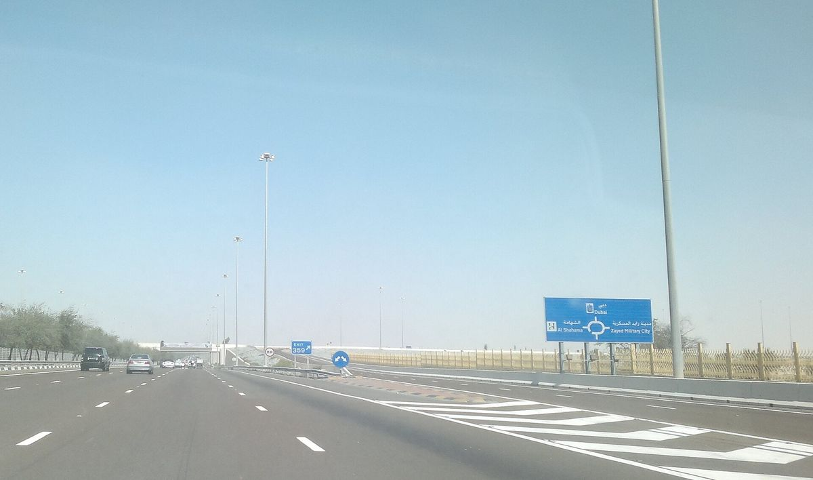

What makes an inter-emirate move different
The obvious difference is distance. A move within Dubai might involve a short drive between communities. A move from Abu Dhabi to Dubai, or from Dubai to Al Ain or the Western Region, involves a much longer road trip. That means more fuel, more driver time and less flexibility to fit another job into the same day.
The less obvious difference is coordination. Two buildings in two emirates, each with its own management office, permit process and lift booking. Different community rules. Possibly different utility providers and tenancy registration systems. The move itself can be smooth, but the paperwork needs more planning.
How movers price the distance
Some movers charge a flat inter-emirate rate on top of their standard local price. Others build the travel into a fixed job price. A few charge per hour, with the drive counted as working time for the whole crew. Each approach can produce a fair price, but they are not directly comparable unless you know the assumptions.
Ask every company:
- Is the drive time included in a fixed price, or charged per hour?
- Is there a separate inter-emirate or long-distance surcharge?
- Does the crew travel with the truck, or separately?
- What happens if traffic or a lift delay pushes the job past the planned hours?
One day or two?
For a small flat, the whole move can often happen in one day: pack in the morning, drive at midday, unload in the afternoon. For a larger home, many movers suggest packing on day one and moving on day two. This reduces the risk of a crew arriving at the new building late in the day, when lift slots may be limited or quiet hours begin.
If the quote assumes two days, ask whether your items stay on a locked truck overnight or in the company's warehouse, and whether cover applies during that time.
Permits at both ends
Most towers in both Abu Dhabi and Dubai require some form of move-out and move-in approval. This might be an online permit, a form with the building management or a booked slot with a refundable deposit. Arrange both early. A truck that arrives in Dubai without an approved move-in permit may have to wait, and waiting time can be charged.
Villa communities may require gate passes or notice to the community office. Ask your new landlord or agent what is needed.
Tolls, timing and traffic
The main road between the two cities is busy at commuting times. A morning departure from Abu Dhabi can run into Dubai's rush hour on arrival. Movers who do this route regularly will usually plan around it. Road toll costs may be built into the price or listed separately. For live road information, the Roads and Transport Authority in Dubai publishes traffic and toll details.
Utilities and addresses
An inter-emirate move often means switching utility providers. Abu Dhabi and Dubai have different water and electricity authorities, and your Ejari or Tawtheeq registration depends on where you live. These are not part of the mover's job, but timing them alongside the move avoids arriving to a flat with no power or air conditioning.
Comparing inter-emirate quotes
Use the same brief for every mover: both addresses, both floor levels, lift access at each end, home size, packing needs and your preferred date. Then compare:
- Total price, including VAT and any surcharge
- Crew size, trucks and number of days
- Packing materials and labour
- Handling of overnight storage if the move spans two days
- Cover during transit and storage
- Payment terms and cancellation rules
Sending one request for mover quotes for UAE moves across emirates can save you contacting companies one by one, and the written replies are easier to line up.
Choosing the right company
Not every Dubai mover works regularly in Abu Dhabi and vice versa. A company based in one emirate may still be excellent in the other, but ask whether they do this route often. Familiarity with buildings, permit processes and traffic patterns on both sides reduces the chance of delays.
A simple timeline
- Four to six weeks before: request quotes and check permit rules at both buildings
- Two to three weeks before: choose a mover, confirm date and book lift slots
- One week before: confirm utilities at the new home and plan the old account closure
- Two days before: pack personal valuables and documents separately
- Moving day: be at the old home for loading and arrange someone to receive at the new one if needed

Moving with children between emirates
If your move is driven by a new school, plan the move date around the school calendar where possible. Moving during a school break gives children time to settle before classes start. Pack a separate bag with uniforms, books and comfort items so they are not lost among the boxes. The long drive between emirates can also be tiring for small children, so it can help if one parent travels ahead to the new home while the other stays for loading.
Final word
An Abu Dhabi to Dubai move is very doable in a day or two, but the quote has more moving parts than a local move: distance, tolls, timing and two sets of building rules. Get written quotes on the same basis, ask how drive time is priced and arrange permits at both ends early. That keeps the long drive the only long part of the day.